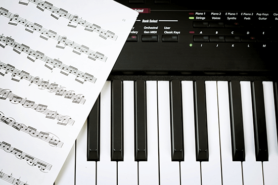

왜 우리는 ‘악보’에 의존할까요?
배운 것, 그 이상의 ‘응용’이 불가능한 이유.
연주의 근본과 실체적 이론에 대해 정확히 이해하지 못하기 때문입니다. 악보에 의존하지 않으려면, 기존의 천편일률적인 수업방식에서 벗어나
다르게 배우고, 다르게 칠 수 있다는 믿음을 가져야 합니다. 시작하세요!
건반은 당신의 음악 잠재력을 담아낼 준비가 되어 있습니다.
30년 경력의 프로페셔널,
저명한 키보디스트 이삼열이 함께하는 프리미엄 클래스를 경험하다!
저명한 키보디스트 이삼열이 함께하는 프리미엄 클래스를 경험하다!
피아노가 유일한 장난감이었던 시절부터 야마하 뮤직코리아 전속 아티스트가 되기까지 이삼열의 키보드클래스는 초보자도,
비전공자도 쉽게 배울 수 있습니다.

#1 정석을 지키며, 절대 지루하지 않은 수업
2310키보드 클래스는 수강생의 눈높이에 맞추어 차별화된 수업을 진행합니다.

#2 정통과 트렌디한 음악이 공존하는 수업
2310키보드 클래스는 일반적인 강의에서 배울 수 없는

#3 1060, 누구나 공감할 수 있는 수업
2310키보드 클래스는 10~20대부터 50~60대까지 누구나 쉽게 배울 수 있습니다.

#4 실력향상이 눈에 보이는 수업
2310키보드 클래스의 솔루션과 함께라면,
이론은 물론, 실기, 응용, 연습방법까지 당신의 반주패턴에 놀라운 변화가 생길 것입니다.
영어처럼, 음악도, 자주 들어야 귀가 열립니다.
귀가 열리기 직전에 포기하지 마세요.
2310 키보드클래스는 건반을 이해하고 음악의 구조를 알아가는 과정을 통해 여러분의 음악적 스펙트럼을 넓힐 수 있는 특별한 기회를 만듭니다.
건반 앞에서 보냈던 시간이 많을수록, 그리고 건반 앞에서 고민하는 시간들이 늘어날수록, 여러분의 출발선은 분명 이전과, 그리고 남들과 다를 것입니다.

관점의 전환, 새로운 솔루션 신디사이저
’WHAT’이 아닌 ‘HOW’ 신디패드 교육을 통해 응용력을 배우세요.
’WHAT’이 아닌 ‘HOW’ 신디패드 교육을 통해 응용력을 배우세요.
주어진 음색을 활용하여 또다른 작품을 만드는 것, 신디사이저를 경험하는 일은 나의 영감을 바탕으로, 새로운 결말을 만들어 가는 일과 같습니다.
2310클래스는 반주자의 관점에서 신디패드의 개념이 아닌 신디패드의 ‘방법'을 알려주는 수업입니다.
이제 당신에게 주어진탄탄한 기본을 바탕으로 음악의 무궁무진한 미지의 세계를 열어갈 일만이 남았습니다.